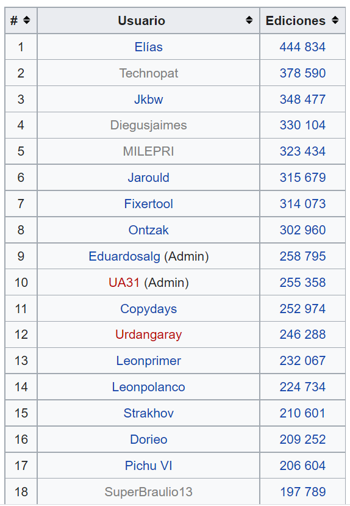

Wikipedia Collaboration Design
Making editing on Wikipedia more collaborative
Wikipedia's design has not changed in the past 10 years. New features like Google Translate have been added over time to help editors contribute to articles, but the biggest feature of the encyclopedia remains to allow editors to collaborate. What changes can be made to improve the way editors collaborate to complete articles, discuss, and resolve issues?
“When I edit something, I am editing, and I know that the next day, the next week, someone will come and better the edit. But it’s not coordinated beforehand, it’s spontaneous. Someone comes; I forgot a comma, I got a word wrong. Someone fixes it. It is a part of collaborative work.”
This project was an extension of a research project I worked on investigating how users of the Spanish Wikipedia collaborate. The original goal of the research project was to write an academic paper afterward.
To read more about the official research project on Wikimedia, click here.
User Research
Identifying how users on Spanish Wikipedia collaborate with other editors. We did not have a specific demographic, we wanted. Users only needed to be 18 years or older to participate.
Recruited users, by email or personal Wikipedia Talk Page, based on number of edits.
Figure 1. - Ranking of edits for Spanish Wikipedia
Looked through user's conversations on article talk pages to look for interesting conversations with consensus or power plays.

Figure 2. - Article talk page translated with Google Translate. An admin tries to get editors to write about what the person did to earn an award, not just winning the award itself. Names blocked for privacy.
Competitor Analysis
When thinking about how to help users collaborate, I was reminded of Google Doc's comment feature as well as Atlas.ti. This made me think about having users be able to tag sections or sentences for different issues, similar to the templates/banners currently used.

Figure 3. - Example of comments in Google Docs
Figure 4. - Example of coded sentences in Atlas

Figure 5. - Example of adding a code to a sentence in Atlas
I also looked at other online encyclopedias like Scholarpedia and Encyclopedia Britannica, though these were more to see different layouts.

Figure 6. - Scholar Side bar
Contextual Inquiry
Completed Wikipedia training modules to see how edits are completed and to learn about the editing policies. We also read through article talk pages of previous participants for the English edition study.
Literature Review
Focused on reading about previous studies, conducted by the research group lead, concerning multiple language editions of Wikipedia and talk pages to better understand the purpose of talk pages and to see how editors collaborate on other editions. Inital Study on the French Edition. Paper explaining talk pages and power plays on Wikipedia.
Interviews
Our goal for the number of participants was 12. We were able to recruit 13 Wikipedia users for the interviews.
Interviews were an hour long and were split into three phases.
Phase One:- Participants background experience with Wikipedia
- What kind of articles they prefer to edit
- Current work on the website
- Familiarity with editing policies
- Showing the user 1-3 of their article talk page conversations
- What were they trying to accomplish with the conversation?
- What was the outcome of the conversation?
- What helped them reach that outcome?
- Feelings towards authority on Wikipedia
- What can help editors reach a consensus on an edit
- Suggestions for new editors
Results
After completing the interviews, we corrected transcripts of recordings and went through a qualitative coding and analysis of the results in Google Sheets.
Phase One:- Participants had 10+ years of experience editing
- Participants ranged from ages 28 to 80
- Most edit articles based on their interests/area of expertise
- About half the users moved on to specialized tasks like working for organizations, becoming admins, or formatting data
- Very familiar with editing policies
- Most conversations had to do with keeping or changing an existing edit
- Users would present past examples, awarded articles, and policies to help their point of view
- Users would try to match the other editor's energy in conversations
- Political and Historical-related article conversations in particular could get intense
- Authority on Wikipedia is "almost an experiment of controlled anarchy."
- Not enough admins to keep up with all the changes but it is still difficult for articles to be vandalized
- Communities/Wikiproject dynamics can vary from group to group
- Users suggested new editors start with small edits and get familiar with policies
User Personas
From the results of the user research, I created 3 user personas.
| The Hobbyist | The Admin | The Specialist |
|---|---|---|

|
 |
|
| The hobbyist contributes to articles for topics related to their interests. They usually edit in their free time to add their own knowledge or correct mistakes. | The admin focuses on resolving issues with users, removing or protecting articles, and marking issues on articles. They are very familiar with rules and policies | The specialist occasionally makes text edits to articles but now focuses more on Wikipedia related organizations or making charts and bots. |
| Pain Points: A lot of articles they view tend to need minimal edits | Pain Points: Not enough admins to keep up with all the articles or issues related to edits | Pain Points: Difficulty finding specific issues they can help with at times |
| Wants: Find and edit many articles based on topics related to their interests | Wants: Keep articles marked with up to date templates, or tags. Resolving issues easily between users | Wants: Edit articles with issues related to their area of expertise, no matter the topic |
User Testing: Current Selection and Editing Process
While auditing Wikipedia, I found the community portal for certain article issues and also wikiprojects. I felt overwhelmed by everything I found and the navigation, so I wanted to test the current process for finding an article to edit based on a certain issue.
I tested this process with 5 new Wikipedia users. I thought they would be able to give more thoughts on what could be unclear in the navigation.


User Flow
The steps a user can take to navigate from the community portal to an individual article.

Results
Pain points- Too many links, making navigation difficult
- A lot of scrolling invlolved
- Some intermediate pages had large, distracting banners
- Banners on articles can make a user unsure of how much work they need to do on an article
Figure 7. - Banners on the page for the list of articles in need of copy editing
Some articles have templates/tags from three years ago, showing that templates may not be the most effective for raising editing issues. With this last piece of feedback, I also began to think of a tagging/template system again for editing on articles.
My next step was to decide on a solution.
Solution Approach
Initial Ideas
Idea One: Centralized portal for editing, similar to the community portal. The community portal requires a lot of scrolling so I wanted to follow the structure of the editing tutorial dashboards instead. The current editing tutorial mainly had videos though.
Figure 8. - Editing Tutorial page
Second idea: Using a tagging system for different types of edits on articles. The current tagging system for edits is not very helpful since they are mostly technology related.
Figure 9. - Available tags for edits
Initial sketches
Figure 10. - Editing Portal SketchThe screen on the left represents the top part of the page. I changed the nine issues to cards instead of the nine headers to be more noticeable. I added a section for Wikiprojects to help users find articles related to topics they might like, and possibly joining other editors in a Wikiproject.
 Figure 11. - Article Edit Sketch
Figure 11. - Article Edit Sketch
The second sketch shows an article on the left. There are still important banners at the top, but section headers now have issues marked, like grammar. This is supposed to take up less space and not be as distracting. The other change is to the edit summary. Users can now add tags that apply to the edit they made.
These were the main sketches for the idea I wanted to go with. I focused on similar screens as the ones I had users observe in the usability tests. I created then a low-fidelity prototype.
Low-Fidelity Prototype and User Tests
I created a low-fidelity prototype on Marvel App. I ended up having elements of the editing portal and tagging system. I conducted 5 moderated usability tests on Marvel App as well.
To better assess where users clicked, I gathered some of the heatmaps. Some heatmaps are followed up by the corresponding changes I made to the screen based on verbal feedback and the heatmaps.


Feedback
Since I had previously tested a similar task on Wikipedia itself, I compared what the users told me about both.
Cons (that were addressed in revisions):- Users preferred filtering articles by letter
- Edit filter dropdown was unclear in purpose and page-position
- all the edit buttons by the sections headings were distracting, especially when just reading
- Less cluttered/text-heavy
- Section tags provide good article navigation
- revions are clearer with tags added to the summary
After making the revisions I didn't not conduct a second set of usability tests, but I started to prepare a high-fidelity prototype with feedback from the first set in mind.
High-Fidelity Prototype
Mood board
I looked for other ideas on things like dashboards, text editors, and encyclopedias for inspiration. All the designs on the mood board were found on Dribbble.

Design Language
Next, I looked for colors and design elements used on Wikipedia so I could recreate the pages for my prototype.

Final screens


Reflection
This was my first time redesigning for desktop so I got to learn how to efficiently use a lot more space compared to a mobile application.Through this project, I got a lot more experience using both Figma and Marvel App. It made me appreciate Wikipedia's current design more as well since I recreated some of the Wikipedia pages and their existing components. I also learned that it is very important to conduct and understand the in-depth research of your users before truly creating a solution. This is more efficient and provide a better solution for users overall. I would like to see how participants from the research project would feel about the designs though. I tried to take their responses into account along with the newer users I tested the low-fidelity prototype with to create a solution to help users of varying experience. This was a fun project overall and I'm glad I was able to use a previous research project for a design project!
Full Process and Report
Download a pdf report of my entire process by clicking here.
Tasks
- UX Research
- Recruitment
- User Interviews
- Usability Testing
- UX / UI Design
Tools
- Figma
- Marvel App
- Google Sheets